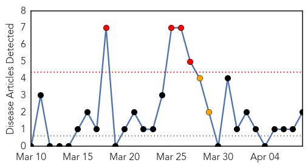
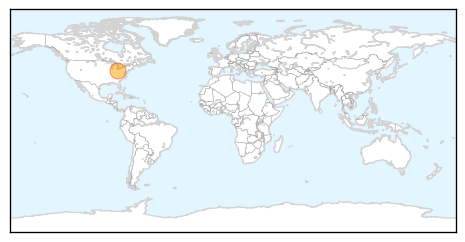
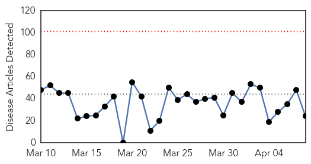
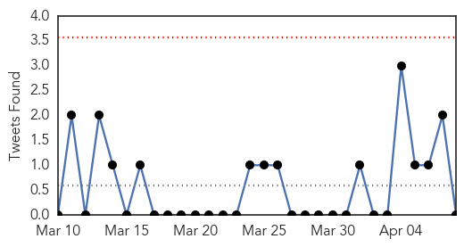
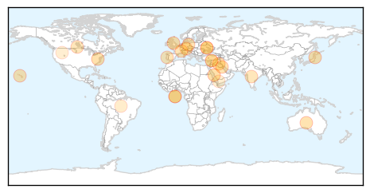

Mumps
30-Day Web Trend
4 alerts, 2 warnings

30-Day Twitter Trend
0 alerts, 0 warnings

Article Locations
Article Confidences

Top Articles:
Top Tweets:
-
No tweets found for Apr 08, 2014
Unknown
30-Day Web Trend
0 alerts, 0 warnings

30-Day Twitter Trend
1 alerts, 0 warnings

Article Locations
Article Confidences

Top Articles:
- 0.998
- MERS Fears Prompt ER Closure at Saudi Hospital — Naharnet
- 0.994
- Japan Orders Strict Measures Against PED Virus
- 0.981
- Cases of scarlet fever in Wales reach 20 year high
- 0.917
- Chicago Tribune
- 0.917
- Chicago Tribune
- 0.917
- Chicago Tribune
- 0.917
- Chicago Tribune
- 0.917
- Chicago Tribune
- 0.866
- Russia's Lavrov, EU's Ashton discuss Ukraine crisis
- 0.866
- Russia says NATO trapped in "Cold War thinking"
- 0.866
- Environmental activists protest against the deal with Germany's Renewable Energy Law in front of the Chancellery in Berlin
- 0.866
- File photo of construction workers fixing solar panels for solar power plant near Olching
- 0.866
- NATO head warns Russia of "grave consequences" over Ukraine
- 0.866
- Record low wheat output expected in Syria as drought looms
- 0.855
- New Leaflet Spells out Dangers of African Swine Fever
- 0.816
- African Swine Fever Risk Level Raised
- 0.812
- PED remains a concern in Ontario
- 0.806
- Read Health Articles & Blogs at TheHealthSite.com
- 0.602
- HSC doctor receives $2 million grant for research on pandemic disease
- 0.555
- Prince William News
- 0.547
- Nationwide polio prevention campaign launched
- 0.542
- UN and partners renew anti-polio efforts in Middle East after first case detected in Iraq
- 0.536
- The Argonaut – Spreading awareness, not disease — Get Yourself Tested campaign begins on campus this week
- 0.501
- Obama signs cancer research bill in memory of girl
Top Tweets:
- 0.617
- Are you prepared for a flu outbreak or pandemic? Guidance, checklists, & resources to help you create a plan: http://t.co/ETg32vFPDX NPHW
- 0.552
- Culminando un d√≠a de trabajo y de provecho! Hice limonada y me dio resultado.... Felizzzzz üåªüëèüí™üôÖ
- 0.538
- Neurólogos extranjeros de primer nivel, se realizará Simposio internacional de Neurología: En la mañana del ju... http://t.co/xTMBkjv8IG